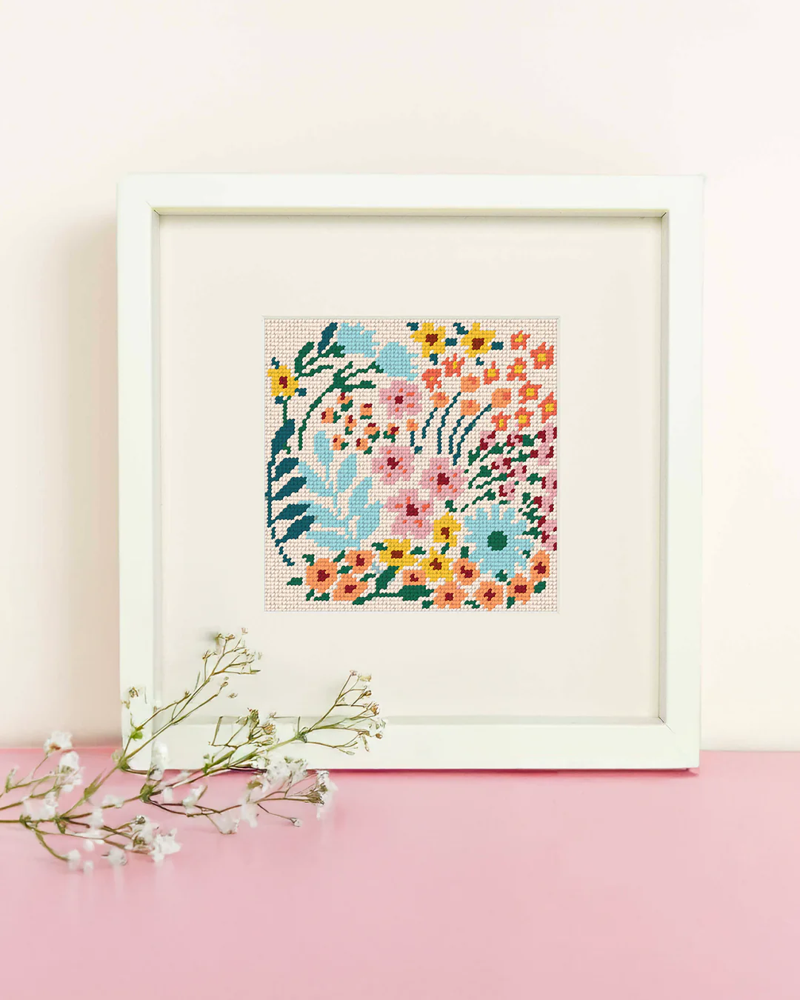

Needlepoint matters because it challenges some of the most dominant values of contemporary life, speed, disposability, and constant digital engagement by offering a different approach to creativity and production. At a time when so much of what we consume is instant, mass produced, and intangible, needlepoint insists on slowness, materiality, and care. Every stitched piece represents hours of labor, attention, and intention. This alone makes it significant. It reintroduces the idea that time and effort are not inefficiencies, but essential parts of making.
Beyond its process, the subculture also reshapes how we think about craft itself. Historically, needlepoint and similar textile practices have been dismissed as purely decorative or relegated to the private, domestic walk of life. Associated with feminized labor and undervalued creative work. Needlepoint actively pushes against that perception. By using the medium to express complex ideas like humor, politics, identity, and critique of its participants. This elevates it into a form of artistic and cultural commentary. A stitched phrase or image can carry just as much weight as a painting or digital artwork, but it does so through a medium that has traditionally been overlooked.

Materials are chosen thoughtfully, projects are completed slowly, and finished works are often treasured for years.
This reclamation highlights how forms of expression that have been historically marginalized can be reinterpreted and given new relevance. In doing so, needlepoint contributes to ongoing conversations about whose work is valued, what counts as “serious” art, and how creativity is defined. It also creates space for voices that might not always be centered in mainstream art worlds, allowing individuals to communicate through a medium that feels personal, accessible, and grounded.
Needlepoint does not necessarily reject digital spaces,in fact, many participants share their work online and build communities through social platforms but it offers a counterbalance to them. It provides a tactile, offline practice that encourages focus and mindfulness in contrast to the attention that often comes with digital life. This dual existence,both online and offline,makes the subculture particularly relevant in the present moment, as people search for ways to engage more intentionally with their time and creativity.

The emphasis on sustainability is also important. In contrast to fast fashion and mass produced decor, needlepoint promotes a mindset of making and keeping. Materials are chosen thoughtfully, projects are completed slowly, and finished works are often treasured for years. This approach encourages a deeper appreciation for objects and reduces the impulse toward constant consumption. In this way, the subculture aligns with broader movements that prioritize sustainability, ethical production, and conscious living.

Perhaps most importantly, needlepoint subculture fosters a sense of connection both to others and to the past. Through shared techniques, patterns, and practices, participants engage in a form of family, linking their work to generations of makers before them. At the same time, they adapt and transform those traditions, ensuring that the craft remains dynamic and relevant. Needlepoint matters because it redefines what it means to create in the modern world. It shows that small, deliberate acts like a single stitch repeated over time can carry deep cultural significance. Its impact is quiet but powerful, shaping conversations about art, labor, sustainability, and the value of slowing down.